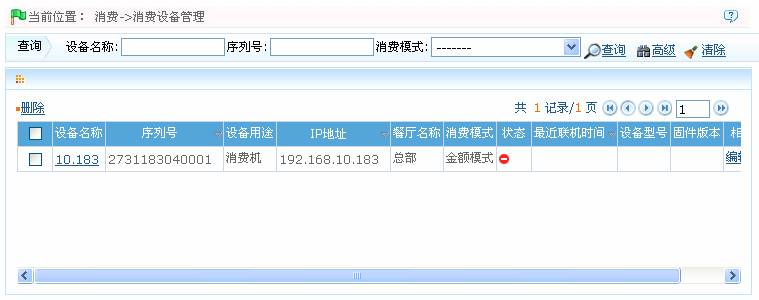
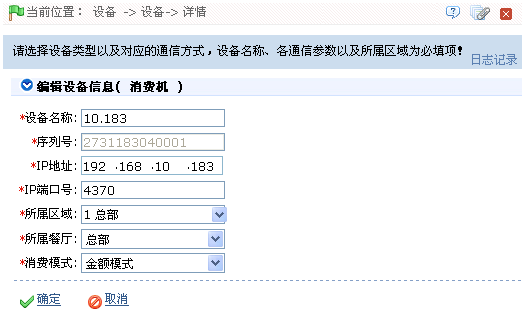
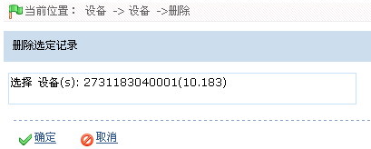

ID--8.9 消费设备管理
点击【消费】 【消费设备管理】，进入如下图所示消费设备管理页面：
【消费设备管理】，进入如下图所示消费设备管理页面：

用户可以在此页面中进行消费设备的编辑与删除操作。
-
 编辑消费设备
编辑消费设备
1、单击“设备名称”，或单击设备所在行的“相关操作”下的【编辑】按钮，进入编辑设备页面：

 注意：设备的“序列号”不可修改。其他参数的修改方法，请参见5.2.2 新增消费设备。
注意：设备的“序列号”不可修改。其他参数的修改方法，请参见5.2.2 新增消费设备。
2、设置完成后，单击【确定】按钮，保存修改后的消费设备信息。
-
删除消费设备
1、单击选中需删除的消费设备，然后单击设备列表上方的【删除】按钮，或单击设备所在行的“相关操作”下的【删除】按钮，进入删除设备确认页面：

2、单击【确定】按钮，删除被选中的设备。